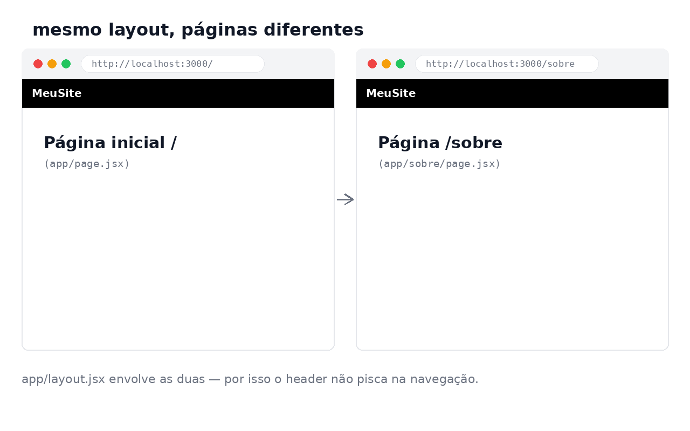

Páginas (page.jsx) vs layout
Agora que a Ana já viu o layout.jsx e o page.jsx, surge a dúvida: "se o layout já tem <html> e <body>, o que sobra para a página?" Nesta página você vai entender a diferença entre os dois e como eles se aninham — e ainda vai criar a segunda página da Ana, a rota /sobre.
- A diferença:
layout= moldura que persiste;page= conteúdo único da rota - Como criar a rota
/sobrecriandoapp/sobre/page.jsx - O aninhamento:
layoutenvolvepageem toda rota - Os arquivos de convenção:
loading.jsx,error.jsx,not-found.jsx - Que a página pode receber props como
paramsesearchParams
A ideia: a moldura do quadro vs a pintura
Voltando à analogia da casa: o layout é a parede e a moldura — existe uma vez e fica lá, quieta, enquanto os quadros mudam. A página é o quadro: cada rota pendura um quadro diferente naquele mesmo espaço. Quando a Ana navega de / para /sobre, o Next.js não reconstrói a parede — ele só troca a pintura dentro da moldura. Por isso a navegação é instantânea e o menu não pisca: o layout foi renderizado uma vez e continua vivo; só o {children} recebe o novo quadro.
Tecnicamente, quando o navegador pede /sobre, o Next.js Procura o caminho app/sobre/page.jsx e renderiza a árvore: app/layout.jsx por fora, app/sobre/page.jsx dentro do {children}. Se existir app/sobre/layout.jsx, ele entra no meio, envolvendo só as páginas de /sobre. A regra é simples: cada pasta de rota pode ter um page.jsx (obrigatório para a rota existir) e um layout.jsx (opcional).
Além de page e layout, cada pasta pode ter outros arquivos de convenção com nomes reservados: loading.jsx (mostra um "carregando…" enquanto a página não fica pronta), error.jsx (mostra uma página de erro amigável se a página quebrar — precisa de "use client"), not-found.jsx (a página 404) e route.js (API routes, que é assunto do Nível 2).
Criando a segunda página da Ana: /sobre
Basta criar a pasta e o arquivo — o Next.js já enxerga a rota nova na hora (hot reload de rotas):
export default function Sobre() {
return (
<main>
<h1>Sobre a Ana</h1>
<p>Eu estou aprendendo Next.js em 2025!</p>
</main>
);
}
Agora abra http://localhost:3000/sobre no navegador. Repare que o <html>/<body> continua vindo do layout raiz — a página só forneceu o recheio.

/ e /sobre compartilham o header.| Arquivo | Papel | É obrigatório? |
|---|---|---|
layout.jsx | Moldura que envolve as páginas; persiste na navegação; define <html>/<body> no raiz | Só o da raiz de app/ |
page.jsx | O conteúdo único da rota (o quadro) | Sim, em toda pasta que é rota |
loading.jsx | Tela de "carregando…" automática (Suspense) | Não |
error.jsx | Tela de erro da rota (precisa de "use client") | Não |
not-found.jsx | Página 404 personalizada | Não |
template.jsx | Como o layout, mas recriado a cada navegação | Não |
Props que a página recebe
O componente de página recebe props automáticas do Next.js: params (os segmentos dinâmicos da URL — nível 2) e searchParams (os parâmetros de query, tipo ?page=2). No nível 1 a Ana pode ignorar, mas é bom saber que dá para receber:
export default async function Home({ searchParams }) {
const sp = await searchParams; // ex.: /?nome=Ana → sp.nome === "Ana"
return <h1>Olá, {sp.nome ?? "visitante"}!</h1>;
}
Quando dá errado
app/sobre.jsx (arquivo solto em vez de pasta) e a rota /sobre deu 404:404 — This page could not be found. Dica do guia: no App Router a rota /sobre precisa do arquivo app/sobre/page.jsx — pasta "sobre" + arquivo "page.jsx" dentro. app/sobre.jsx não vira rota.
<html> dentro de uma page (achando que cada página precisa):Warning: Invalid <html> tag inside <body>… / no build: Error: <html> cannot appear as a child of <div>. Dica do guia: <html> e <body> ficam SÓ no layout raiz. Na page.jsx use <main>, <section>, <div>… — nunca <html>/<body>.
Exercícios
1. O que acontece com o layout quando o usuário navega de uma página para outra?
2. Para criar a rota /contato, quais arquivos/pastas o App Router espera?
Exercício 1
Escreva o caminho completo do arquivo que cria a rota /sobre no App Router: